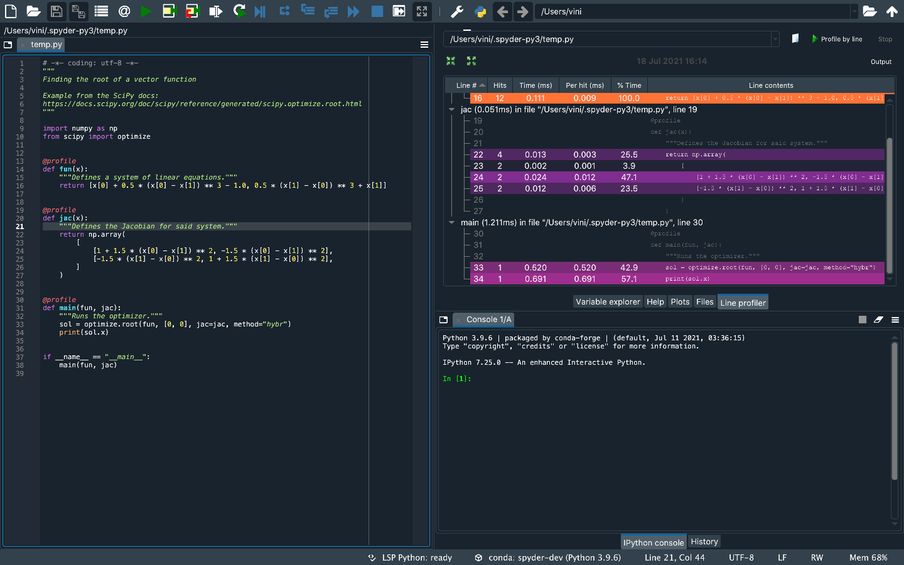
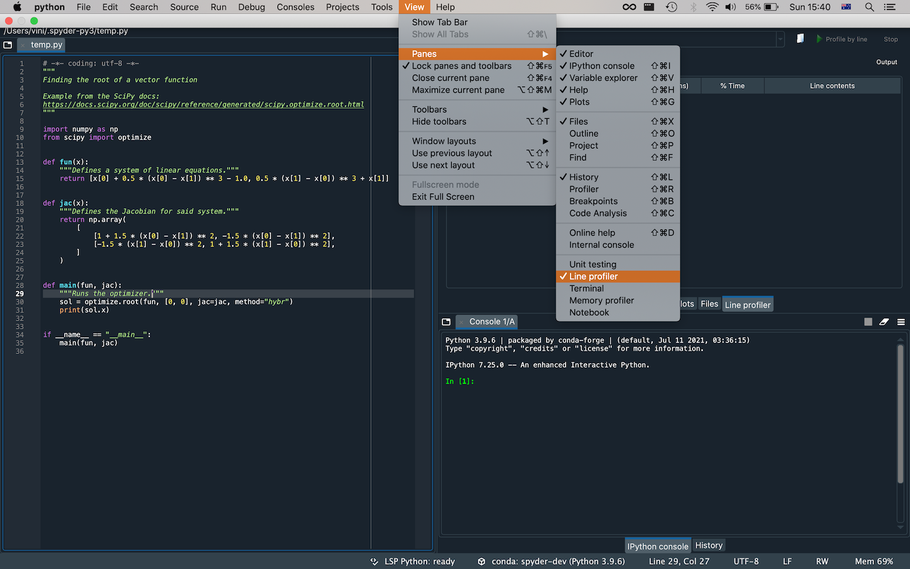
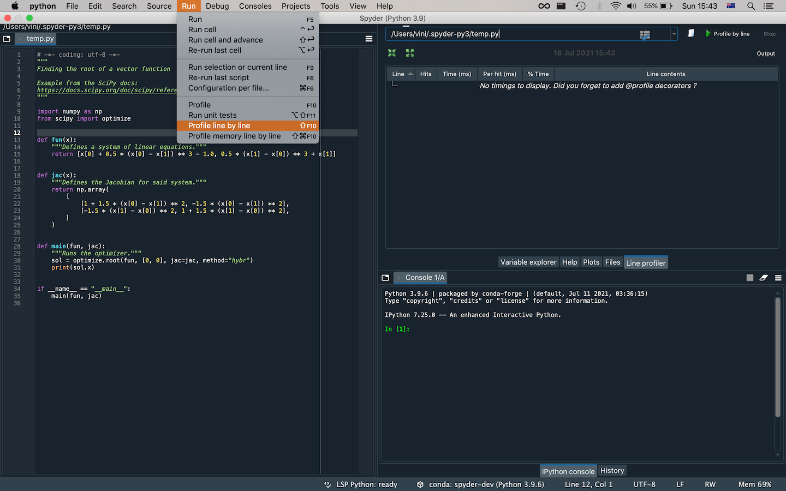
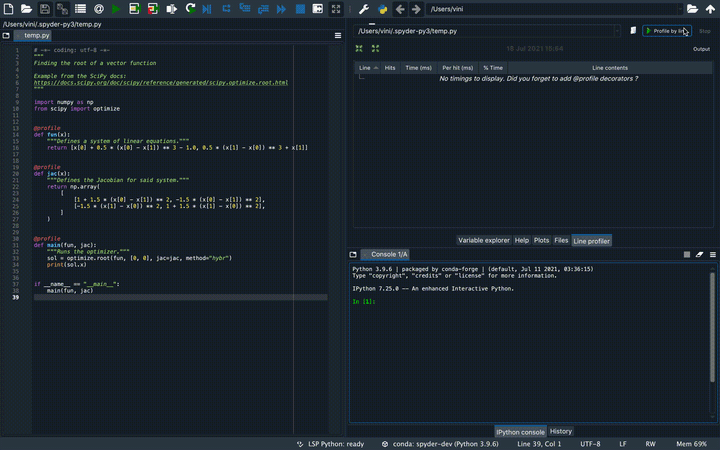

Spyder Line Profiler#
Spyder-Line-Profiler is a plugin to run the Python line profiler. This package profiles the time that individual lines of code take to execute.
Installing the Line Profiler#
If you installed Spyder using conda, the best way to obtain Spyder-Line-Profiler is to run the following command in your terminal (or Anaconda prompt on Windows):
conda install spyder-line-profiler -c conda-forge
Importante
At the moment it is not possible to use this plugin with the Spyder Instaladores independientes for Windows and macOS. We’re working to add support for them in the future.
Restart Spyder in order to be able to use the plugin.
Using the Line Profiler#
When the Line Profiler is installed, it will be available under the menu item .
You will see it then as a tab next to the Files tab.
For the Line Profiler to work, you must place the @profile decorator on the line above any functions that you wish to profile.
Now that the decorators have been added, you can then either select a script with the button present in the pane or run the profiler from . Your file will then be profiled line by line.
After running the profiler, either from the button in the pane or the menu, the results are shown in the Line Profiler pane. The path displayed there is that of the file being profiled.
The Line Profiler pane shows six columns:
Line #:the number of the line being profiled.Hits:how many times that line is hit in the scope.Time (ms):time spent running the line in total for all hits, in milliseconds.Per hit (ms):average time spent per hit, in milliseconds.% Time:percentage of time taken by that line of total scope time.Line contents:the source code in the line.
Lines with a stronger color take more time to run.